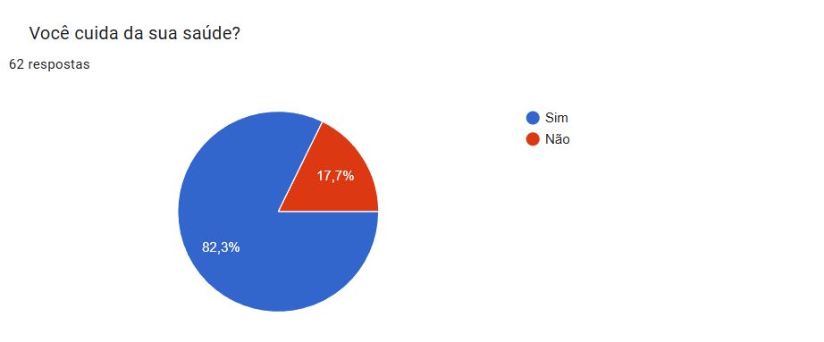

A saúde agradece cada movimento!
A saúde te recompensa a cada movimento: viva mais, viva melhor.
A prática regular de esportes é fundamental para uma vida saudável e feliz. Além de fortalecer o corpo, a atividade física proporciona inúmeros benefícios para a mente, contribuindo para uma melhor qualidade de vida. Os esportes fortalecem o coração, os pulmões e os músculos, auxiliam no controle do peso e na prevenção de doenças. Na saúde mental, reduzem o estresse e a ansiedade, aumentam a autoestima e a concentração, além de prevenir doenças como depressão. Além dos benefícios individuais, os esportes promovem a socialização e o desenvolvimento de habilidades como trabalho em equipe e respeito mútuo. Investir em atividade física é investir em si mesmo.
Corpo em Movimento, Mente em Forma!
A prática regular de esportes proporciona inúmeros benefícios para a saúde, tanto física quanto mental.
O exercício físico contribui para o fortalecimento do sistema cardiovascular, melhora a resistência
muscular,
auxilia no controle do peso e previne doenças crônicas como diabetes e hipertensão.
Além disso, o esporte promove o bem-estar emocional, reduzindo o estresse, a ansiedade e os sintomas da
depressão.
A atividade física também estimula a produção de endorfinas, neurotransmissores responsáveis pela sensação
de prazer e bem-estar.
Mas como o Esporte beneficia a Saúde?
- Saúde Física: O fortalecimento muscular e ósseo é fundamental para uma vida saudável e
ativa.
Através da prática regular de exercícios físicos, como a musculação e atividades de impacto,
estimulamos a produção de células que ajudam a construir e reparar os tecidos musculares e ósseos.
- Saúde Mental: Redução do estresse e da ansiedade: A atividade física atua como um
antidepressivo natural,
liberando endorfinas que promovem a sensação de bem-estar e relaxamento.
A conexão entre saúde mental e física: um corpo em movimento, uma mente em paz.
Melhora da cognição: O exercício físico estimula a produção de novas células cerebrais,
melhorando a memória e a capacidade de aprendizado.
Prevenção de doenças: A atividade física contribui para a prevenção de diversas doenças
crônicas, como diabetes e doenças cardiovasculares, proporcionando mais qualidade de vida.
Aumento da energia: A prática regular de exercícios aumenta os níveis de energia e disposição para as atividades do dia a dia.
Preocupação com a Saúde: Resultados da Nossa Pesquisa
Minoria negligencia a saúde: 17,7% dos participantes declararam não cuidar da saúde. Essa disparidade pode ser atribuída a diversos fatores, como: desigualdades sociais, falta de acesso a serviços de saúde, informações desencontradas e até mesmo questões culturais. Nosso projeto tem como objetivo conscientizar essa parcela da população e mostrar como pode ser simples e divertido cuidar da saúde, através de ações personalizadas e inclusivas.

Gráfico realizado pela Atlhetelife
Mesmo tendo maioria demonstrando preocupação com a saúde, uma parte significativa mostrou displicência sobre o assunto, adiando hábitos saudáveis por falta de tempo, motivação ou conhecimento.
O desinteresse do brasileiro com a saúde, pode ser explicada por diversos fatores, como:
- Desigualdades sociais: Pessoas de baixa renda têm menos acesso a recursos como alimentos saudáveis, áreas verdes e serviços de saúde de qualidade, o que dificulta a adoção de hábitos saudáveis.
- Falta de acesso a serviços de saúde: Distâncias, longas filas de espera, custos elevados e burocracia dificultam o acesso a consultas, exames e tratamentos, levando muitas pessoas a adiarem ou abandonarem o cuidado com a saúde.
- Informações desencontradas: A disseminação de informações falsas ou incompletas sobre saúde, especialmente nas redes sociais, leva à desinformação e à tomada de decisões equivocadas sobre hábitos de vida.
- Questões culturais: Crenças, tabus e práticas culturais podem influenciar a percepção das pessoas sobre doenças, tratamentos e a importância da saúde, dificultando a adoção de hábitos saudáveis.